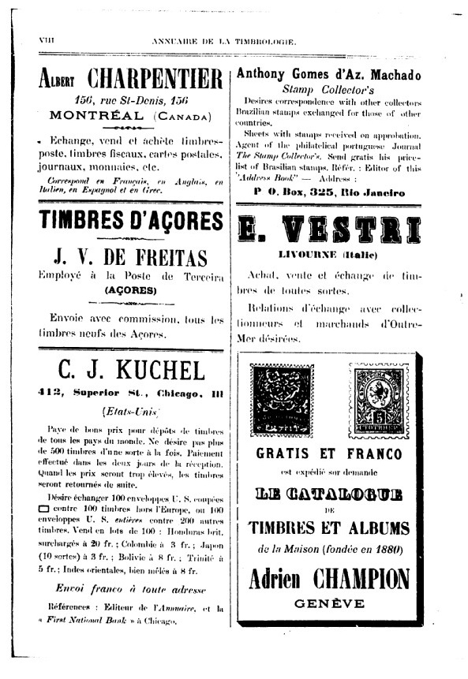
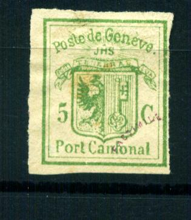
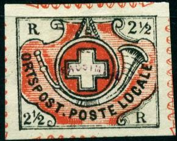
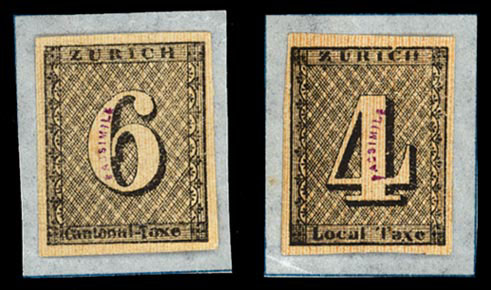
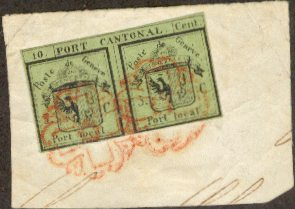

Note: on my website many of the
pictures can not be seen! They are of course present in the
catalogue;
contact me if you want to purchase the catalogue.
The forger Adrien Champion is known to have made
forgeries of the Swiss cantonal issues. Some of his products bear
the overprint 'FACSIMILE'. He also used the names Mrs. Gimbel of
Florence or Mrs. Krummen of Paris (source: Schweiz.
Philatelistische Nachrichten in January 1910 or
http://briefmarken.ag/).
According to "Philatelic Forgers, their Lives and Works' by
V.A. Tyler, Adrien Champion was born in 1867 in Geneva. He went
bankrupt twice, once in 1887 and a second time in 1900. He also
used the names Henri Bauche (Beuche?), Jules Haüf, Oscar Haüf,
Jules Rapin, Oscar Rapin and E.Wessler. He went on trial in 1901
in Great Britain (under the name Henri Bauche) for selling
forgeries, but did not turn up for the final judgement. He was
finally caught in 1902 and went on trial again in Geneva (see
text below). He managed to buy his own confiscated forgery stock
and stayed in Gex (France) for a while before re-settling back in
Geneva where he founded the firm 'Frederic Champion' (all
according to the same book mentioned above).

In the Bourse des Timbres of March 1887 and June 1887, two advetisements appear of the firm Kirchhofer and Champion (address 11, Rue Levrier, Geneva). In the same journal, Bourse de Timbres, in June 1888 No5, an advertisement of him alone appears under the name Adrien Champion in which he offers 'an immense assortment of Swiss stamps'. He was then located in 7, Rue du Commerce in Geneva.
In The London Philatelist 10, 36-39 (1901) we can
read that Henri Bauche (i.e. Adrien Champion) was brought before
the magistrate for selling dangerous forgeries made by Venturini. The following text can be
found there:
"These forgeries of the Cantonal stamps have been known
just about six months, and photos of some of them have been given
in the Vertrauliches Korrespondenz Blatt. They comprise double
Geneva; 5 c. Geneva, black on green, and green on white ; Vaud, 4
c. and 5 c. ; Neuchatel, Winterthur, Poste Locale, Type 40 ;
Zurich, 6 r., Type 5 ; and probably also Zurich, 4 r., though
this has not yet been seen here. They come from Italy, and are
made by Venturini at Pisa, who also makes 1 and 5 fr. Monaco,
high values French Tax Stamps, inverted heads of Spain, etc. He
sells them, as forgeries, at 1 to 1 1/2 marks each, either unused
or postmarked, and a number of shady dealers, like A. Champion,
who is now in Italy, have spread them broadcast over France and
Germany. No doubt now they are trying England and America. The
forgeries are photogravures, and are therefore very good
imitations ; but there are still points by which they can be
recognised, although the 6 r. of Zurich is so good that the paper
is almost the only test. It is really most unsatisfactory that
nothing can be done to stop the making of these first-class
forgeries."
The journal 'La Liberté' of thursday 27 February
1902 (Fribourg, Switzerland, http://doc.rero.ch) writes in
French:
Genève, 26 février
Le Tribunal correctionnel a condamné Adrien Champion, ancien
négociant en timbres poste, pour banqueroute simple, à neuf
mois et dix jours de prison. Cetter peine étant compensés par
la prison préventive, Champion a été remis immédiatement en
liberté. Son frère Edmond, poursuivi comme complice, a été
acquitté.
A rough translation says that Champion was convincted for 9
months and 10 days in prison. However, he already stayed in
prison that long and was released immediatly. His brother Edmond,
suspected to be accomplice, was declared not guilty.
In the Philatelic Record of March 1901 (page 54)
the following text can be found on the arrest of Adrien Champion
when he tried to seel Venturini forgeries in London:
"Recent Swiss Forgeries. A successful attempt has been
made during the past month by a foreigner now in custody to palm
off on stamp dealers in London a number of forgeries of Swiss
Cantonals. In most cases the forgeries are wonderfully good, and
must be classed amongst the most dangerous yet produced, as they
have been made by photography. They differ very slightly in size
from the genuine. The envelope stamp (Gibbons number 6) is
slightly larger than the genuine ; but all the others are
fractionally smaller ; the double Geneva, of which we have seen
used and unused copies, are exactly 1mm. smaller than the
genuine. They are rather a paler yellow green than is generally
found on the original. They also show a few minor differences,
the most prominent of which are on the right-hand half—the
lower beak of the eagle does not touch the wing, which it should
do. The 4c. Vaud, of which we have also seen used and unused
copies, is slightly darker in colour, but this forgery is easier
to detect, as the figure " 4 " is not quite correct.
The Post Locale without frame is an attempt to be number 40 on
the plate, but on comparison differs slightly in the background.
Collectors and dealers are indebted to Mr. Peckitt for his prompt
warning to be on their guard."
On page 94 of the same journal the following text can be
found:
"Swiss Forgeries : Arrest and Prosecution. At
Bow-street, before Mr. de Rutzen, Henri Bauche, 34, a French
commercial traveller, was charged on remand with obtaining £53
worth of foreign stamps from Mr. William Hadlow, stamp dealer, of
the Strand, by means of false pretences. Mr. Harry Wilson
prosecuted ; Mr.Caldicott defended. On February 9th, the accused
called on the prosecutor and obtained from him £53 worth of
foreign stamps in exchange for some which, with the exception of
about 30s. worth, were, it was alleged, forgeries. Mr. Wilson
said that he should now prefer other charges against the accused,
but should have to ask for a further remand, that the stamps
might be examined by a committee of experts at the British
Museum. John William Jones, stamp dealer, of Cheapside, stated
that the prisoner came to his offices on February 13th, and
offered to exchange several stamps with him. The witness looked
at them, and noticed, among others, a four cent. Vaud, genuine
specimens of which were worth £25. He had no doubt that the one
shown him by the accused was a forgery, and he suspected that
several of the other stamps were not genuine. The prisoner agreed
to call again the next day, but meanwhile the witness consulted
several stamp dealers. Owing to what he was told,
Detective-sergeant Haines was asked to come to his office, and
was present when the prisoner arrived. Mr.Jones pointed out to
the latter that several of his stamps had a " fishy "
appearance. Sergeant Haines then took him into custody.
Cross-examined, the witness said that he detected the forgery
directly he saw the stamp, but the forgery was a dangerous one.
Even an experienced man might take some time to find it out. That
particular forgery had been on the market about a year. David
Field, stamp merchant, of the Royal Arcade, Old Bond-street, said
that about February 5th, the prisoner visited his shop and bought
24s. worth of stamps. He showed the witness a quantity of very
rare Swiss and other stamps, and said he wanted to exchange them
for other specimens. They were left with the witness in order
that he might obtain expert opinion upon them, and, this being
done, he gave the accused £95 worth of stamps in exchange for
those which he had brought. The expert whom the witness had
consulted subsequently told him that forgeries were on the market
to such an extent that he should like to look at the stamps again
and show them to other experts. This was done, and it was then
discovered that the stamps were not genuine. Frederick Robert
Ginn, stamp dealer, carrying on business in the Strand, deposed
that he gave the prisoner £84 worth of stamps in exchange for a
quantity of stamps, including two four cent. Vauds, one used and
one unused. He was afterwards advised that they were all
worthless. Mr. M. P. Castle, vice-president of the London
Philatelic Society, and a member of the committee of experts in
connection with that Society, said he had made a study of foreign
stamps and their forgeries for the past 30 years. On the sheets
of stamps which the prisoner had disposed of to Mr.Ginn and Mr.
Field were a few genuine common stamps of little value, but the
rest were forgeries, including the four cent Vaud unused, genuine
specimens of which were worth £100. In his opinion the false
issues were reproduced by photography; they were exceedingly well
done. Mr. de Rutzen committed the prisoner for trial."
In the Philatelic Record of April 1902 (page
94-96) the story continues with:
Adrien Champion, of Geneva. It may be remembered that early
last year a certain Henri Beuche visited London, and victimised
several well-known dealers, by selling to them very clever
imitations. The perpetrator was caught and remanded ; bail was
granted in the sum of £200, which was paid by a lady. The couple
disappeared under forfeiture of the bail, and England knew them
no more. This Beuche was no other than Adrien
Champion, of Geneva, with whose glaring
advertisements, in other papers, most ofour readers will be well
acquainted. In the Schweizer-Briefmarken Zeitung a full account
is given of a law case before the Correctional Tribunal of
Geneva, in which the said Adrien Champion was the accused,
charged with bankruptcy (not fraudulent, as some of our
comtemporaries have it) lack of sufficient book-keeping, stealing
goods from the bankrupt firm of Champion & Co, issuing and
discounting fictitious bills of exchange, and swindling. It was a
great pity that amongst his offences the manufacture and sale of
forged stamps was not included. The history of the firm Champion
& Co., is worth recording, showing as the recital does, a
continuous series of subterfuges. In 1893, the firm of Adrien
Champion failed, then a large creditor, named Kirchhofer,
became a partner in the new firm of Champion & Co. Theodore
and Edouard Champion, brothers of Adrien, also joined as junior
partners. In consequence of differences with Theodore, M.
Kirchhofer left the firm, and became a printer. He, however, had
an interest of £400 in the firm as creditor for the stock which
he brought to it. In 1896, Adrien left the firm, travelled in
Europe, and did business on his own account, but returned in 1898
to resume the management. Theodore left the firm in the same
year, and joined that of Forbin, in Paris. In 1900 the firm of
Champion & Co. failed, Adrien asked to be allowed to go away
for " a few days " on account of his health, and take
with him "his own collection ;" the permission was
given, and he—disappeared. Under the names of Hanf, Jules
Rapin, Henri Beuche, and several other aliases, he again
travelled through Europe, selling many forgeries, and sometimes a
few genuine stamps. During this time the Bankruptcy Court
unravelled his financial transactions ; this led to an action
brought by the said Court and the Industrial Bank of Geneva. For
some months Adrien could not be found, but at last he was
arrested at Pont-de-Beauvoisin, in France (Isère), extradited,
taken to Geneva, and put in prison. His brother, Edouard, was
also accused of having signed fictitious bills of exchange. The
trial took place on the 25th of February, and Adrien, quite calm
and collected, defended himself. He did not deny having sold
forgeries, and said that it was not forbidden to sell imitation
jewelry, that a forged stamp is a work of art, and as collectors
have not always the money to pay for the original, consequently
they buy facsimiles to fill their spaces, and that he had always
sold facsimiles at lower prices than the originals would cost.
Asked about the causes of his arrest in England under the name of
Henri Beuche, he coolly answered that, as he was not arraigned
for those acts, he need not give any explanations. The first
witness was M. Lecoultre, Director of the Bankruptcy Court, who
detailed the clever methods of the bankrupt, and stated that the
liabilities were about £8,8oo. M. Lachenmeyer, Director of the
Industrial Bank of Geneva, was the next witness, and spoke to the
issuing of the fictitious bills. His bank had such drafts to the
extent of £680, which were nearly all returned unpaid. Stamps
had been deposited by Adrien for the same amount, but these were
bought by Kirchhofer for £80. An accountant stated in his report
on the bookkeeping, that there was an error of £1400 in one
balance sheet, which error was afterwards corrected by cross
entries. M. Jacquier was called as expert, together with M,
Doursun, and gave evidence as to the value of the stock. He said
that Adrien always increased the price of stamps by 40 to 50% in
order to be able to offer large discounts, that the stock
contained 7-8 millions of common stamps, of which many kinds
could only be sold off very slowly (there were 400.000
Argentines, 1862 reprints), that many stamps were defective and
that there were at least 50,000 forgeries in the stock. The
experts valued the whole stock at £3,680. The president then
handed to M. Jacquier three lithographic stones and asked him,
whether they could be used for these forgeries. He replied Yes,
because he recognised forty designs of surcharges often found in
the stock, such as " Oficial"of Argentina, Uruguay and
Paraguay, " Three Pence " of Bermuda, " Half
Penny" of Cyprus, large figure "2" of Costa Rica,
" Quatro Centavos " and "5 Centavo " of
Argentina and others and a "grille" obliteration to be
used for the stamps of Geneva 5c green on white. The next witness
was M. Kirchofer. He said that the stock contained forgeries in
1893, when he joined the firm, but that they were sold as such.
He had bought the stock [at £2,000 though taxed at £3,600.
—The Ed.] and had already destroyed some and would destroy
the remainder of the the forgeries. Three employees stated that
one morning 200 or 300 small books filled with stamps were
missing. They reported the loss to Adrien who told them it was
not their business! M. Messner, another employee, said he had
often to answer claims about forged stamps, which had been sold.
Two lithographers stated that they had made the lithographic
stones from models supplied by and to the order of the accused.
The president then read some correspondence, which had been
found, and amongst other items the framed cross was mentioned The
framed cross was not on the three stones in Court, still it might
be on another not discovered yet. In answer to all the charges
the accused said, laying stress on every word, that "stamps
are a whim, and to surcharge them is, I think, another of these
whims." M. Forbin, of Paris, for the defence admitted that
forgeries should undoubtedly not be sold as genuine stamps, but
that it was not forbidden to sell facsimiles. That all these
tales about forgeries had been invented by the Societe Francaise
de Timbrologie (!), that that Society was composed of jealous
dealers and a mutual admiration society publishing unsigned
articles in their journal against other dealers(!) He also said
that the stock, as far as he had seen it, was taxed at only 5 %
of the real value, that it had been bought for nothing, and was a
pre-arranged affair between the Bankruptcy Court and
M.Kirchhofer. M. Theodore Champion tried to explain the reason of
his brother's failure and also of the error of £1,400 in the
balance sheet. Several more people were called for the defence
and gave Champion a good character, saying that he was a charming
fellow, perfectly honest and a good worker. The jury found
Edouard not guilty, Adrien guilty of simple bankruptcy, but
acquitted him of stealing, and he was found guilty with
extenuating circumstances of issuing fictitious bills of
exchange. Adrien was condemned to imprisonment for seven months
and ten days, but, as in Geneva, detention in prison while
awaiting the trial is always counted, he was liberated at once,
having served his time.
The following forgeries were found in Champion's stock :
France : Tete-beches of 1849, forged.
France : Unpaid letter stamps of 1, 2, and 5 frs , forged.
French Colonies: All the rarer surcharges, forged.
British Colonies: A multitude of forged surcharges and
obliterations.
Alsace-Lorraine : Forged obliterations.
Argentine Republic: Large figures 1, 2, 8, upright, slanting, and
inverted ; 1/2 c of 1884, inverted ; all the " Oficial
" surcharges. These are all splendidly imitated. Of course
large slanting figures do not exist as originals.
Baden: 18 Kreuzer.
Bechuanaland: Various surcharges.
Belgium . 5 frs., brown.
Bermuda : Good imitations of the 1874 surcharges.
Bremen : Nearly all values well imitated.
Brazil : The first two issues, large figures and slanting
figures, splendidly imitated. Third issue with forged
perforation.
Bulgaria: 3 on 10 and 5 on 30 st.
Cape of Good Hope: Splendid imitations of the triangulars done in
taille-douce.
Cyprus : 30 Paras and Half Penny surcharges.
Costa Rica : Surcharge U. P. U.
Cuba : Surcharge Y1/4 and 66.
Papal States : Entire sheets of 1 scudo.
Egypt: 5 and 10 piastres of 1866, 5 piastres of 1866 and 1867,
unpaid 5 piastres grey, all well done.
Great Britain : A large quantity of 1d. black, washed. Perhaps it
was intended to transform them into V.R.'s.
Guatemala: Numberless surcharges.
India: 2, 3 and 5 rupees changed to Chamba, Gwalior, Jhind and
Nabha.
Ionian Isles: Stamps and obliterations forged.
Japan : Splendid forgeries.
Russian Levant : The 7 and 8 kopeks surcharges.
Mexico : All the older issues, with and without names of towns.
Monaco : The 5 frs.
Naples : The blue Savoy Cross.
Nevis: The issue of 1861 in sheets of 12 types.
New Brunswick: The three values of 1851.
Nova Scotia : The second issue 1860, forged obliterations.
New South Wales: Sydney Views.
Peru : The 1/2 peso, yellow, and the surcharge "
Gobierno."
Philippines : All the stamps issued in 1859-1861.
Moldavia: The 81 paras.
Roumania : 50 bani with beard.
Eastern Roumelia: The R.O. surcharges.
South Bulgaria : The Lion surcharges.
Sardinia : The 3 lire inverted head and obliterated.
Spain : Nearly all the higher values of the 1851, 1852, 1853, and
1854 issues, splendidly executed. Also the 12c. with inverted
head, both issues.
Sweden: The error "Tretio," very well done.
Tuscany : The 3 lire and 60 crazie.
United States: All the higher value stamps.
The following forgeries are most likely such Champion forgeries. I've seen them all pasted on an album page with inscription 'SUISSE A. POSTES LOCALES ET CANTONALES' (i.e. double Geneva, half of the double stamp, 4 large Geneva stamps, Vaus, Winterthur, Neuchatel, Basel and Zurich 4 and 6 rp, both with horizontal and vertical red lines). The forgeries on this page had the following "FACSIMILE" overprints in several types (red, black, curved). These album pages were possibly sold by Champion. Also, pages with inscription "FACSIMILE DES TIMBRES CANTONAUX SUISSES 1843 a 1851":

Forgery of Basel



Forgeries of Geneva
Forgery of Neuchatel
Forgeries of Vaud
Under the name Signora Gimbel of Florence, Champion bought genuine 5 c values of Vaud and then replaced the '5' by a '4' to increase their value (source: Schweiz. Philatelistische Nachrichten in January 1910 or http://briefmarken.ag/). .

Forgery of Winterthur, this forgery
first appeared in 1888 (source:
http://www.swiss-stamps.us/HB/HB0206.pdf)


The word "FACSIMILE" exists in blue in an arc shape, but also much larger in red or black in a straight line.
He also made much more deceptive forgeries (or at least sold them), example:

The above Göckel - Champion is photo-lithographed on too thick paper. The size of the stamp is too small compared to a genuine stamp. I have no further information concerning this forgery. By the way, I have not been able to find any further reference to this Göckel forger.....

{kind=link}
{kind=link}
{kind=link}